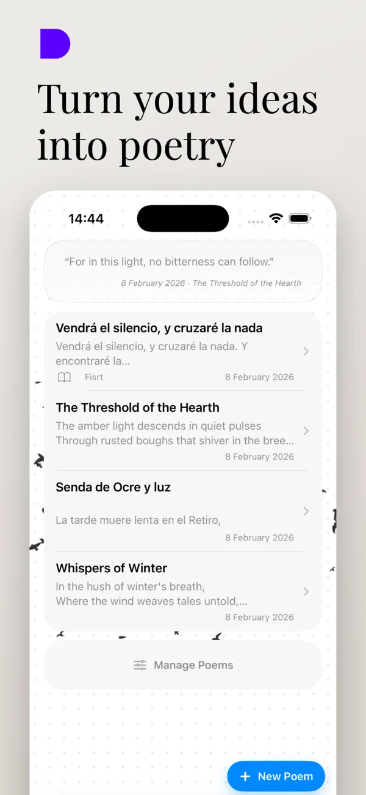
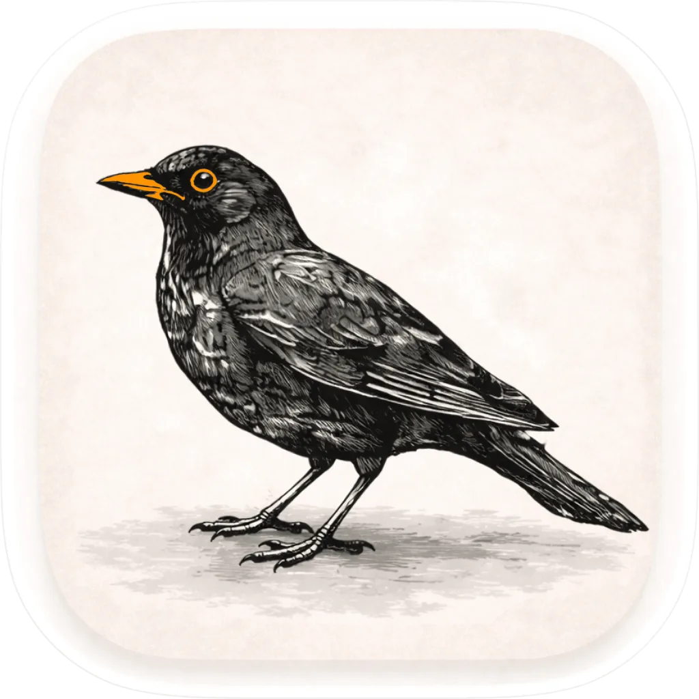

Escribe, pule y da vida a tus versos.
Poetry Companion es tu taller literario para escribir poemas en iPhone y iPad: trabaja la métrica, encuentra rimas, guarda versiones y organiza tus poemarios. Cuando quieras, puedes usar la IA para explorar ideas y generar borradores, eligiendo tono, estilo y métrica.

Todo lo que necesitas para escribir poesía
Encuentra ideas, trabaja el ritmo y las rimas, organiza tus poemarios y conserva las versiones de cada poema. Cuando te apetezca, también puedes apoyarte en sugerencias de IA configurables.
Generador de poemas con IA
Genera ideas y borradores con el tono, el estilo y la métrica que elijas. La IA está disponible cuando la necesitas; también puedes escribir sin ella.
Controla las sugerencias de IA
Define correcciones e instrucciones persistentes para orientar las respuestas y excluye las palabras que no quieres que sugiera.
Métrica en tiempo real
Visualiza las sílabas poéticas de cada verso mientras escribes para afinar el compás y el ritmo exacto de tus estrofas.
Rimas y sinónimos
Encuentra al instante rimas consonantes y asonantes, y explora sinónimos precisos para enriquecer tu vocabulario.
Árbol de versiones
Experimenta sin miedo. Cada cambio se conserva en un historial para comparar alternativas y volver a cualquier borrador.
Libros y poemarios
Organiza tus creaciones en cuadernos temáticos, asigna portadas y mantén ordenado todo tu universo poético.
Grabación de recitados
Graba tu voz leyendo cada poema para escuchar la musicalidad sonora y valorar el ritmo junto al texto escrito.
Modo concentración
Un espacio limpio, sereno y sin distracciones para sumergirte en la lectura o en la escritura manual de tus versos.
Tonos, estilos y métricas para tus poemas
En el selector mostrado puedes elegir entre los tonos romántico y melancólico, los estilos soneto y verso libre, y una métrica libre o endecasílaba. También aparecen más presets identificados con un candado.
Tonos con candado: satírico, íntimo, radiante, místico, minimalista y bucólico.
Estilos con candado: haiku, villanelle, poema en prosa y oda.
Métricas con candado: octosílabo, alejandrino, verso heroico y pentámetro yámbico.
Cómo funciona en 3 pasos
Empieza con tus propias palabras o con ayuda de la IA; tú decides cuánto apoyo quieres.
Empieza con una idea o escribe a mano
Escribe o dicta tus versos, escanea notas en papel, explora temas poéticos o pide a la IA ideas para arrancar. También puedes dejar la IA apagada.
Ajusta la IA o pule el poema tú
Si usas IA, elige tono, estilo y métrica y guarda tus instrucciones de corrección. Si prefieres, mide sílabas, busca rimas y edita cada verso sin IA.
Revisa y conserva tus versiones
Compara borradores, organiza poemas en poemarios y graba tus recitados. Las ideas de la IA se convierten en tuyas cuando las revisas y reescribes.
La app por dentro
Cada pantalla está pensada para la comodidad del escritor y la belleza del verso.
Hecho con mimo para iOS
Aprovecha lo mejor del sistema para que escribir sea un placer cada día.
Widgets de versos
Muestra estrofas aleatorias de tus poemas directamente en la pantalla de inicio para mantenerte inspirado.
Sincronización en iCloud
Tus poemas se sincronizan de forma directa entre tu iPhone y tu iPad a través de tu cuenta de iCloud.
Tus textos son tuyos
Tus poemas se guardan en tu dispositivo y en tu iCloud, y puedes usar la app completamente en local.
Actividades en directo
Sigue el progreso en segundo plano directamente desde la Dynamic Island o la pantalla bloqueada.
Preguntas frecuentes
Respuestas directas a lo más habitual.
¿Puedo generar poemas con IA y también escribir sin IA?
Sí. Puedes pedir a la IA ideas o borradores y elegir el tono, el estilo y la métrica. La IA es opcional: también puedes escribir, revisar la métrica, buscar rimas y sinónimos y organizar tus poemas sin usarla.
¿Poetry Companion es gratis?
La app dispone de una opción gratuita para escribir, medir la métrica de tus versos y organizar tus poemarios. Además, existe una opción Pro con funciones ampliadas para creadores.
¿Dónde se guardan mis poemas?
Tus poemas se guardan en tu dispositivo y en tu iCloud, y puedes usar la app completamente en local para escribir y conservar tus versos sin compartirlos.
¿Puedo controlar el estilo y las correcciones de la IA?
Sí. En el selector aparecen los tonos romántico y melancólico, los estilos soneto y verso libre, y la opción de no fijar métrica o usar endecasílabos. También se muestran presets con candado, como haiku, oda, octosílabo y alejandrino. Puedes añadir instrucciones persistentes para orientar las correcciones y excluir palabras de las sugerencias.
¿Funciona sin conexión a internet?
Sí. Puedes escribir, consultar tus libros, editar poemas y revisar borradores en cualquier momento sin red. Únicamente las consultas a diccionarios externos o sugerencias puntuales requieren conexión.
¿Puedo escuchar cómo suena mi poema?
Sí. Puedes grabar tu propia voz recitando cada poema para comprobar el compás, las pausas y la musicalidad de tus versos junto al texto.
Historial de versiones
Mejoras continuas para enriquecer tu experiencia de escritura.
Versión 1.1.1
Actual- NUEVO buscador de poemas.
- Ahora puedes deshabilitar la animación de pájaros en ajustes.
- Actualización de modelos de lenguaje más avanzados.
- Adaptado para iPhone Duo.
- Mejora en la ordenación de los ajustes y en su accesibilidad.
- Instrucciones y correcciones persistentes de la IA mejoradas.
- Mejora en la grabación de poemas recitados.
- Más claridad en los límites de creación de poemas para usuarios free y premium.
- Ajuste fino para escoger IA para usuarios premium.
- Mejoras generales, solución de errores y mejoras de estabilidad.
Versión 1.1
- Modo concentración para leer, editar o escribir a mano sin distracciones.
- Historial de ideas e inspiraciones utilizadas en cada composición.
- Consulta de las pautas empleadas para dar forma a cada verso.
- Avisos visuales en directo en Dynamic Island durante la creación en segundo plano.
- Grabación de voz para acompañar cada poema y valorar su cadencia sonora.
- Nuevos widgets para la pantalla de inicio con versos aleatorios.
- Corrección de errores y optimización de eficiencia.

Comienza hoy tu cuaderno poético
Disponible de forma gratuita para iPhone y iPad. Mide, pule y conserva tus versos para siempre.